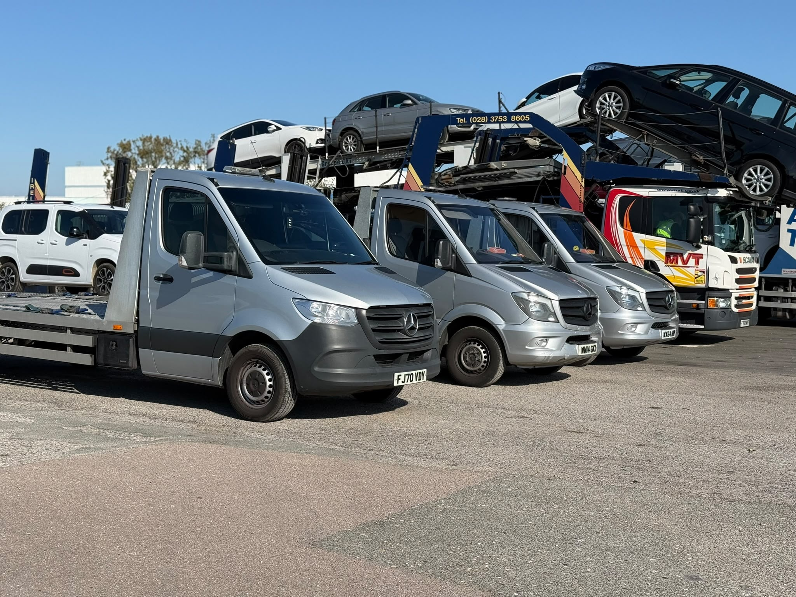
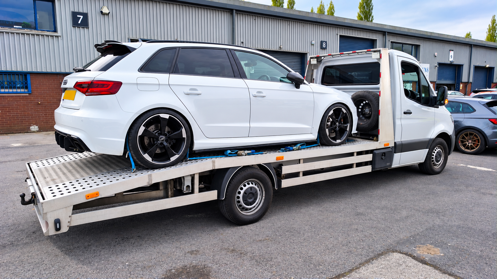
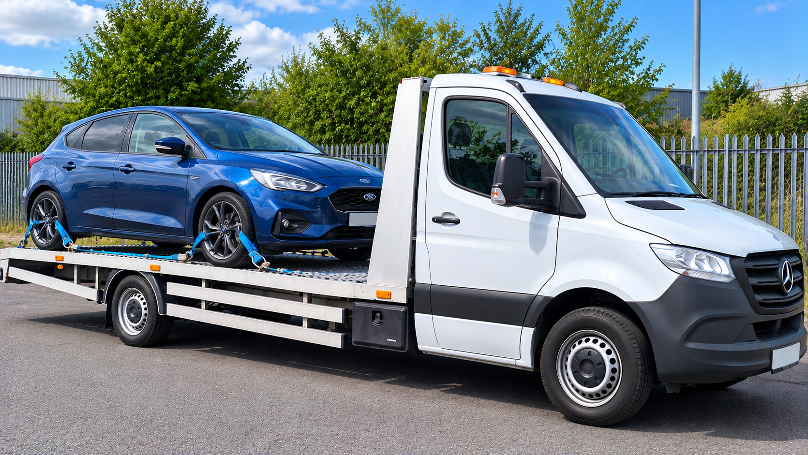
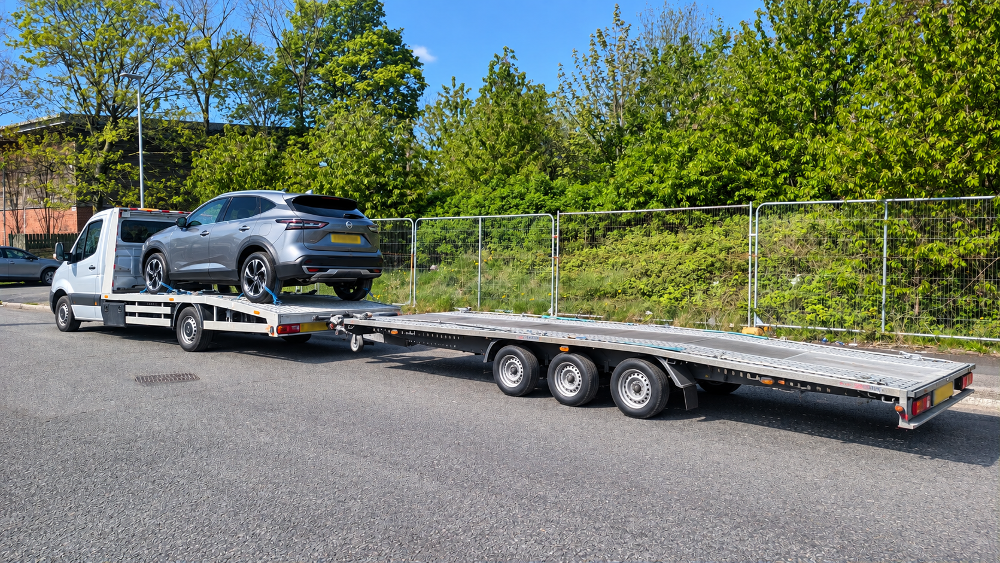
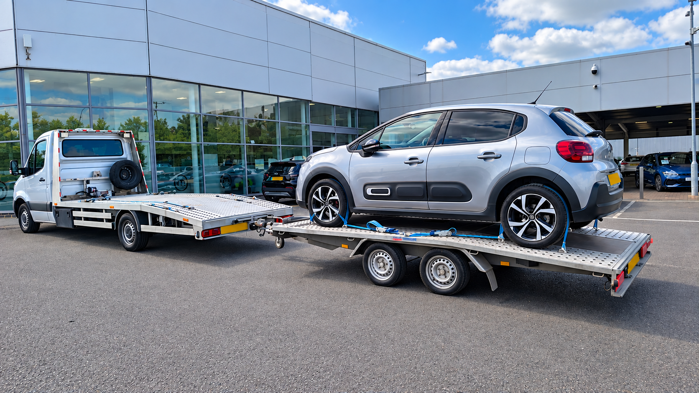
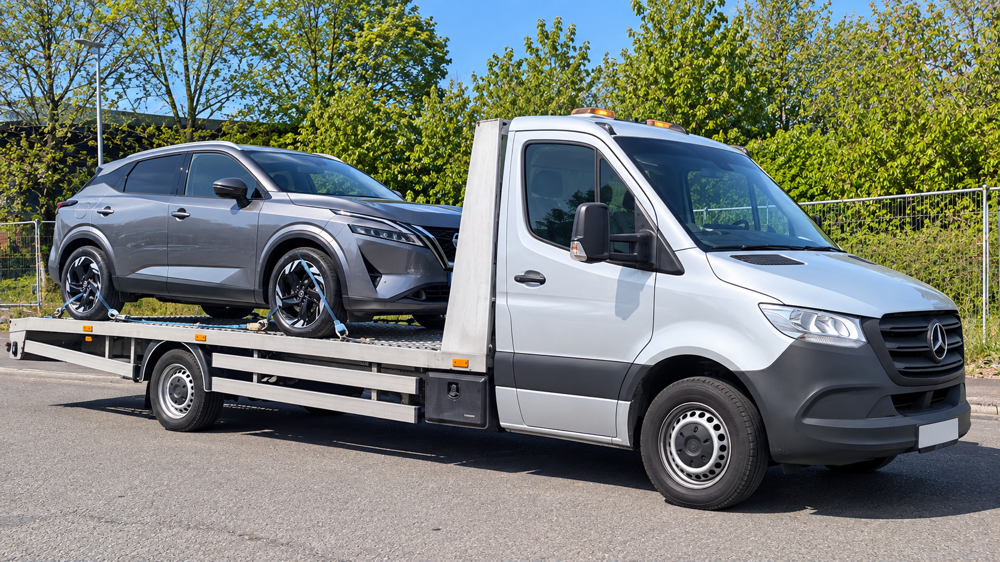

OUR WORK
A selection of our work.
Here are just some examples of vehicle recovery, collection and transport work completed by ResQ Direct.
Every job is different. Vehicles may need collecting after a breakdown, moving between locations, delivering to a garage, transporting after a purchase or moving when they cannot be driven.
If you have a vehicle that needs moving, send us the collection and delivery locations together with the vehicle details and current condition.
GET A QUOTE
RECENT EXAMPLES
Recovery & transport in action.
This gallery shows a selection of vehicles we have moved using our recovery and transport equipment. It represents only some of the work we undertake.





EVERY JOB IS DIFFERENT
Tell us what needs moving.
Before arranging a recovery or transport job, we need to understand the vehicle, where it is located and where it needs to go.
For non-running or damaged vehicles, it is particularly useful to know whether the vehicle starts, rolls and steers and whether there are any access or loading restrictions at the collection point.
Vehicle size, condition, distance and access can all affect the transport required.
NEED A VEHICLE MOVED?
Recovery or transport? Get in touch.
Send us the collection postcode, delivery postcode, vehicle make and model and a brief description of its condition. We can then discuss what is required.
GET A QUOTE